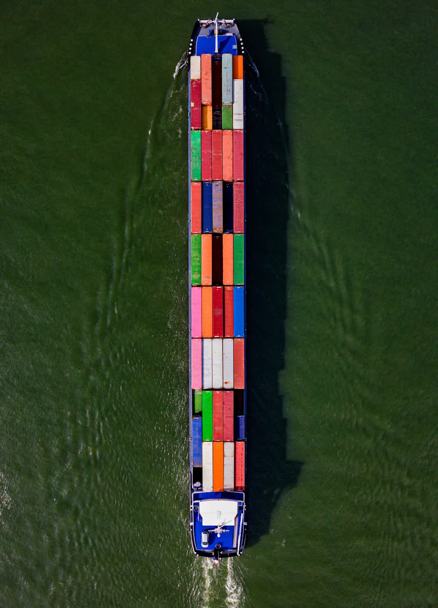

실행을 중심에 둔 무역상사.
와이드칸은 화학 원료와 농산물의 생산자를, 그것을 필요로 하는 산업 수요처와 연결하고, 그 사이의 모든 과정에 책임을 집니다.
무역은 미래에 대한 약속입니다.
발주서는 특정 원료가, 특정 품질로, 특정 장소에, 특정 날짜에 있을 것이라는 약속입니다. 무역상사의 가치는 결국 그 약속이 지켜지는지 하나로 수렴합니다.
와이드칸은 대한민국을 거점으로 화학과 식품·농산물 두 개 사업부를 운영하며, 검증된 생산자로부터 소싱하여 아시아, 중동, 유럽, 미주의 제조사·가공업체·유통사에 공급합니다.
저희는 마켓플레이스가 아니며, 이는 의도된 선택입니다. 물품 소유권을 직접 인수하고, 실행 리스크를 부담하며, 선적 결과에 답합니다. 공급사를 나열하는 것보다 좁은 사업이지만, 할 가치가 있는 쪽은 이쪽이라고 봅니다.
그리고 한 걸음 더 나아갑니다. 생산 라인은 배를 기다려 주지 않기 때문에, 반복 구매되는 주요 품목은 미리 매입해 재고로 보유합니다 — 바다 위가 아니라 이미 땅 위에 있는 공급입니다.

타협하지 않는 네 가지.
가격이 아니라 공급사를 검증합니다
발주하는 모든 생산자는 설비 역량, 규격 일관성, 과거 이행 실적을 기준으로 평가합니다. 시장에서 가장 싼 오퍼는 대개 싼 이유가 있고, 클레임이 걸리는 순간 더는 싸지 않습니다.
감당 못 할 문의는 거절합니다
규격, 물량, 납기가 현실적이지 않다면 일단 수주하고 나중에 재협상하는 대신 문의 단계에서 말씀드립니다. 저희 답변을 기준으로 생산 계획을 세우시기 때문에, 답변은 신뢰할 수 있어야 합니다.
서류를 화물의 일부로 봅니다
화물이 맞아도 서류가 틀리면 억류됩니다. 증명서, 품목분류, 신고서는 범용 양식이 아니라 도착국이 실제로 요구하는 기준에 맞춰 준비합니다.
문제가 생겼을 때도 연락이 닿습니다
선박은 지연되고, 공장은 멈추고, 품질 분쟁은 발생합니다. 무역 파트너의 실력은 바로 그 주에 드러납니다. 그래서 에스컬레이션은 공용 메일함이 아니라 담당자 개인에게 연결됩니다.
대한민국을 거점으로, 4개 권역에서 거래합니다.
한국은 동북아 석유화학·제조 클러스터 안에 위치해 중국·일본·동남아 생산기지와의 리드타임이 짧고, 주요 시장 전체에 직항 정기선 서비스가 연결되어 있습니다.
핵심 시장
한국, 중국, 일본, 동남아, 인도 — 화학 생산의 산지이자 농산물의 도착지 양쪽 모두에 해당합니다.
석유화학 산지
기초 화학, 폴리머, 비료의 걸프 생산자. 아울러 식품 원료 수요가 빠르게 성장하는 권역입니다.
스페셜티 소싱
기술 등급과 규제 서류가 결정적 요소인 정밀화학 및 식품첨가물 생산자.
농산물 산지
아시아 및 중동 수요처를 위한 북미·남미산 곡물, 유지작물, 사료원료 원산지 확보.
책임 있는 거래는 선택 사항이 아닙니다.
화학품과 식품 공급망 화물은 국제적으로 가장 강하게 규제되는 화물에 속합니다. 저희는 컴플라이언스를 마지막 서류 작업이 아니라 거래 설계에 포함시킵니다.
제재 및 수출통제 스크리닝
계약 전 거래 상대방, 최종 사용자, 도착지를 해당 제재 및 전략물자 수출통제 규정에 따라 확인합니다.
화학물질 등록 요건
도착국의 등록·신고 의무 대응을 지원하며, 제한물질 해당 여부를 사전에 확인합니다.
위험물 취급
모든 위험물 화물에 대해 정확한 IMDG 분류, UN 승인 포장, 선사 신고서를 적용합니다.
식품 안전 의무
식품 접촉 및 원료 등급 화물은 도착 시장이 요구하는 인증과 추적성 기준에 맞춰 취급합니다.
반부패 · 공정 거래
급행료도, 미고지 커미션도 없습니다. 거래에 에이전트가 개입하는 경우 매수인에게 고지합니다.
계약 투명성
규격, 검품 기준, 허용 오차, 클레임 절차를 계약서에 명시하여 분쟁 발생 시 합의된 해결 경로가 있게 합니다.